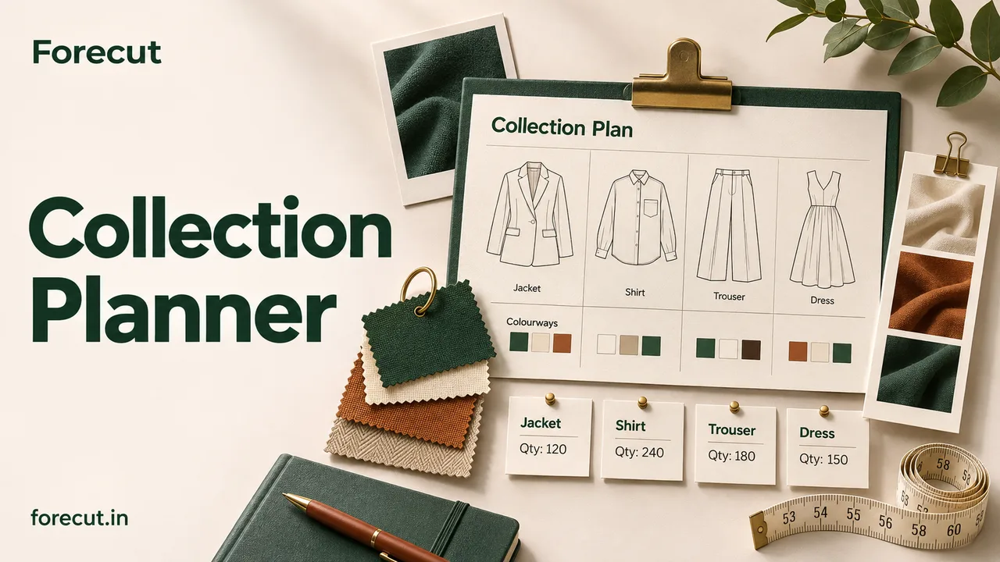

Plan your collection
Collection Planner
Give every style a place in your collection.
Plan categories, colourways, sizes, quantities and target prices in one saved style board.
Collection plan · CSV · Print / PDFOpen tool
From the first colour swatch to the final production date. Practical tools for the people who make fashion happen.

Choose what you need today. Your next step is a click away.
Give every style a place in your collection.
Plan categories, colourways, sizes, quantities and target prices in one saved style board.
Turn a trend detail into a practical, editable style brief.
Create a style card and carry the brief into your tech pack.
Build a colour story you can share.
Start with forecast colours, build combinations, check text contrast and keep your own physical reference codes with each colour.
Turn textile specifications into answers.
27 calculators for yarn, GSM, fabric consumption, weaving, knitting, garment costs and conversions.
Plan dyeing, printing, washing and finishing.
Search a dye library by class and colour, build a batch recipe with chemicals and running costs, preview how coloured fibres blend, and price a full processing route per kg and per metre.
Pattern making, grading and 3D fitting in one studio.
Draft and edit patterns from measurements, grade every size, then sew and drape the garment in 3D on an avatar in your size and pose before you cut a sample.
Grade your measurements across sizes with your own steps and tolerances.
Set base measurements, grade steps above and below the base, and tolerances.
Estimate decoration cost, setup allocation and embroidery batch time.
Compare machine and hand embroidery, screen printing and area-based print quotes.
Bring sketches, callouts, materials and measurements into a supplier-ready document.
Upload front and back views, add callouts and a BOM, and save revision snapshots.
Find a price that makes the numbers work.
Include fabric, making, packaging, selling fees and returns. See your contribution and target price.
Know how much you need to sell.
Compare minimum orders, upfront investment and sell-through before committing to production.
Work backward from your launch day.
Set working days, holidays and supplier lead times to schedule sampling, production and dispatch.
Create a text care label from approved composition and care instructions.
Validate composition totals and lay out text labels using approved care instructions.
Turn verified product facts into editable English or Hindi product copy.
Create editable, factual product copy from your style details.
Organise destination research with official sources and an export checklist.
Track checks for the US, UK and EU with dated primary sources.
Try “colour”, “fabric”, “price” or another task.
Five collection tools share your collection workspace. Eight design and production tools share a studio, with imports from your collection and palette. Back up each workspace to keep your work safe.
Open your collection workspace ↗Every tool is free for registered members. Sign in, or create a free Forecut account in under a minute. Your work stays in your own browser.
The collection workspace is saved in this browser. Download a backup to move it to another device or keep it safe before clearing browser storage.
Use the exports shown on each tool. Confirm estimates with your supplier, approve physical colour references and fit-test patterns before production.
In Colour Palette Builder, type a Pantone code on any colour, or use Look up to open that code on Pantone’s own colour finder. If you hold a Pantone licence, you can import your own reference file; it stays in your browser. Forecut does not publish Pantone colour data. Screen colours are previews; approve the physical swatch or lab dip for production.
Tool cover images are illustrations of each task; they are not product screenshots.